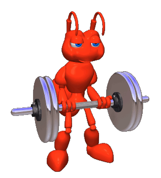

Érase una vez una
hormiga llamada
Junca, muy trabajadora, que vivía en el hormiguero con el resto de su familia, unas 50.000 hormigas.
Las hormigas cargaban el grano para
el invierno en un almacén, y así cuando llegara el frío podrían disponer de alimentos para todas. Pero este año, el grano era de muy pequeño tamaño y era difícil de transportar.
Se llegó a una situación de pesimismo en la que, hasta las hormigas más sabias, desconfiaban de que pudieran sobrevivir al invierno.
Mientras tanto, Junca quería cargar más grano, para ayudar aún más a su
familia, y comprendió que transmitiendo su optimismo al resto de hormigas, lo conseguirían.
Entonces, fue a entrenarse con una
hormiga más fuerte que ella , que se llamaba
Pepe.
Pepe le enseñó los trucos para cargar más grano con el mismo esfuerzo. Junca ensayó durante unos días y cada vez era capaz de cargar más grano.
Cuando Junca se vio preparada para transmitir su mensaje, convocó al resto de hormigas y les dijo: “Ya sé que pensáis que no sobreviviremos al invierno.
Pero tengo la solución: En primer lugar debéis creer que lo conseguiremos, y en segundo lugar, os enseñaré los movimientos que debéis realizar para cargar más grano.”
De esta manera, todo el hormiguero se puso a trabajar como dijo Junca, con optimismo, y antes de que llegara el invierno ya habían recolectado más grano que el año anterior.
Por lo que, gracias a Junca, todas las hormigas sobrevivieron al invierno sin ningún problema.
FIN.